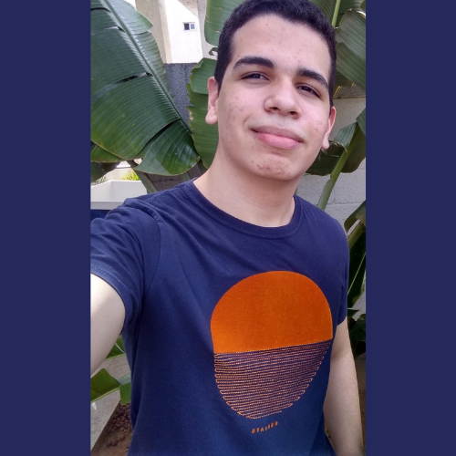

Sobre
Este site foi criado voltado a matéria de Projeto Integrador do 3º ano do curso de informática do Instituto Federal do Rio Grande do Norte (IFRN), campus Mossoró. O mesmo tem como objetivo incentivar e ensinar pessoas interessadas a resolver esse grande enigma que é o Cubo Mágico, trazendo de forma gratuita um tutorial de 8 passos simples, o site ainda esta em fase de desenvolvimento.
Participantes
